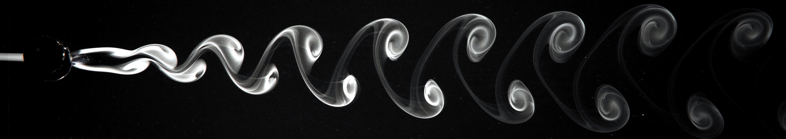

Activities
Organizer
Industrial and Applied Mathematics (IAM ) Seminar, University of Oxford, 2025-2026
Mathematics, Modeling, and Art minisymposium (with Yue Sun , Jiayin Lu , and Danyun He ), AWM Research Symposium, University of Wisconsin, Madison, May 2025
Applied Math Lab (AML) group meetings, New York University, 2023-2025
Minicourses by young researchers , New York University, Fall 2024Biological and Bioinspired Fluids and Structures minisymposium (with Silas Alben), SIAM Life Sciences, July 2022Student AIM Seminar Series ,
University of Michigan, 2018-2022MCAIM Graduate Seminar , University of Michigan, 2021-20222022 SIAM Student Mini-Symposium in Applied Mathematics , University of Michigan, 27 May 20222021 SIAM Student Mini-Symposium in Applied Mathematics , University of Michigan, 16 July 20212020 SIAM Student Mini-Symposium in Applied Mathematics , University of Michigan, 29 May 2020Postdoc-Grad Mentorship Program, University of Michigan, 2019-2020
Other activities
Participant: Complex Motion in Fluids 2023 summer school, University of Cambridge, 17-20 July 2023
SIAM Student Chapter representative, University of Michigan, 2020-2022
Member of the Graduate Student Advisory Committee, University of Michigan, 2019-2020
Useful Links
For
LA TE X purposes:
Relevant to fluid dynamics:
Vortex sheets:
Your browser does not support the video tag.
A vortex sheet embedded in two-dimensional ideal flow with smoothing
parameter δ=0.5.Desingularization of Periodic Vortex Sheet Roll-up , R. Krasny.
Your browser does not support the video tag.
Roll-up of the vortex sheet shed by an elliptically loaded wing. The value of
the smoothing parameter is δ=0.1.Computation of vortex sheet roll-up , R. Krasny.
Numerical solutions of the filtered Birkhoff-Rott equations for the anti-symmetric and symmetric modes.Singular vortex dynamics on filtered Euler flows , T. Gotoda.

Photo can be found in Milton Van Dyke's book: An Album of Fluid Motion.